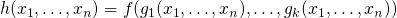
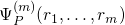

definiciones
1 Definiciones
1.2 Composición
Sean y
 .
.
se obtiene por composición a partir de si:

1.3 TODO Funciones primitivas recursivas
1.4 TODO Clases PRC
Una clase de funciones totales es PRC si:
- las funciones iniciales están en C
- toda función que se obtenga mediante composición o recursión primitiva de otras funciones pertenecientes a está en .
1.5 TODO Codificación de pares
1.6 TODO Codificación de secuencias
1.7 TODO Lenguaje deprogramasión S
1.8 TODO Estados
1.9 TODO Descripcion instantánea
1.10 TODO Cómputo
1.11 S-parcial computable
Una función (parcial) es S-parcial computable si existe un programa P tal que:
donde  es:
- el valor de en el estado final del programa , si el programa termina.
- está indefinido si no.